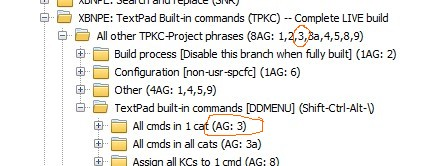
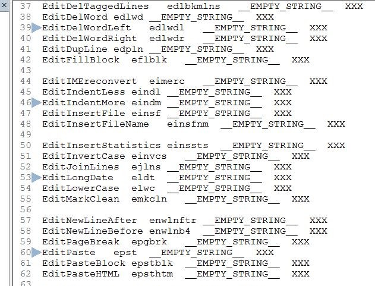

[BACK] (XBN-PhraseExpress is released under the LPGL 2.1)
Contents:
[top] TPKC-Build: The master and sub-build processesThere are four master processes, each calling a set of children (or "sub") processes. This section specifically documents each processes input and output, as well as the process itself.
The four master processes, the first two of which are executed only by the TPKC-admin, the second two by every TPKC-user:
zTpkcMasterBuild1of4: Broadly speaking, this reads in the raw-global configuration, and generates the global-command-configurationzTpkcMasterBuild2of4: Verifies the imported global-command-config, and prepares for creating user-command-config.zTpkcMasterBuild3of4: Reads in the TextPad all-command list, and generates user-command-configuration.zTpkcMasterBuild4of4: Reads in user-command-config, and generates the Non-BootStrap (nbs) phrases, and the active-tp-command ddmenu.After each process is complete, all output phrases must be imported to their appropriate locations in the PhraseExpress application. For example, the output of build-process-03 is indicated in PhraseExpress by 'AG:03' in its destination folder's description.

Note that processes 07, 10, 11, and 12 have no importable output (or no output at all).
An alternative method to triggering these build processes, is via 'xhtkab'.
zTpkcMasterBuild1of4See below for two videos demonstrating preparing for, and then running this master-build-process 1-of-4.
'zTpkcMasterBuild1of4' calls each of the following, in order:
[go] zTpkc01CreateSetCatlVarPhrsFile[go] zTpkc02CreateTPBtstrpQblAndMrkRGCRegex[go] zTpkc03CreateAll_allCmdsIn1CatPhrsFiles[go] zTpkc03aCreate_AllCmdsAllCats_PhrsFile[go] zTpkc04CreatePhrsFl_callVPMForEachCatAndAllCatCnt[go] zTpkc05CreateAll_callVPMForAllCmdsInCat_pFls[go] zTpkc06CreateGlobalCommandConfigFromRawTo open all output directories in Windows Explorer windows, use
zzzTpkcBuld1of4OpenAllOutputDirs
This is to make the importing of this processes output easier. This is automatically triggered (after confirming with you) at the end of the process.
Eliminating all old auto-generated files, to prepare for a new build. This also sets the build-mode to test.
zTpkcMasterBuild2of4'zTpkcMasterBuild2of4' calls each of the following, in order:
[go] zTpkc07VerifyImportedGlobalCmdCfg[go] zTpkc08CreateSetAllKCsTo1CmdPhraseFiles[go] zTpkc09CreateAllSetCmd1VarPhraseFilesTo open all output directories in Windows Explorer windows, use
zzzTpkcBuld2of4OpenAllOutputDirs
zTpkcMasterBuild3of4'zTpkcMasterBuild3of4' calls each of the following, in order:
[go] zTpkc10ElimBtstrpKCsFromTpAllCatLst[go] zTpkc11SplitNbsAllLstToIndvCatLsts[go] zTpkc12CreateRawUsrCfgFromIndvCatLists[go] zTpkc13CreateUsrSpcfcCmdConfigFromRawTo open all output directories in Windows Explorer windows, use
zzzTpkc13OutroDlgMaybeOpenOutDir
This is used instead of (the non-existant!)
zzzTpkcBuld3of4OpenAllOutputDirs
because the only importable output generated is by
zTpkc13CreateUsrSpcfcCmdConfigFromRaw
zTpkcMasterBuild4of4'zTpkcMasterBuild4of4' calls the following, in order:
To open all output directories in Windows Explorer windows, use
zzzTpkcBuld4of4OpenAllOutputDirs
[top] Full versus RAW: Phrases to execute one TPKC-build-process onlyEach build sub-process (01 through 15) is executed by its master. For example, sub-build '02' is executed by the '1of4' master process. A Full Run of a sub-process goes through its entire setup (its "exclusive" setup), in order to ensure that it will run properly. For example:
Each sub-build also has a "RAW" process, which is the "core" of its functionality. Specifically, it is the part that executes after all setup is complete. This is useful for testing and diagnostics only.
[top] Live versus test build: Building the entire TPKC-Project, or only part, for testing and demonstration purposesNormally, the above processes build the TPKC-Project for all categories, as defined by
-zTpkcAllCategoryAbrvLCsQbl:
{#insert zTpkcAllCategoryAbrvLCsQbl}
For demonstration or diagnostic purposes, they may instead be run on a sub-set of these categories. When this is desired, set
zTpkcAllCategoryAbrvLCsQbl_FORTESTMODE
to an exact subset of zTpkcAllCategoryAbrvLCsQbl, and then turn the test-category flag on, by setting
zTpkcBuildModeTestOrLive
to 'test'. When set to 'live', then all categories are built.
Building the TPKC-Project in 'test' mode is permanent. Once test-mode is set, it cannot be changed unless the entire tpkc project is rebuilt, starting at sub-proc-01.
[file][config][help]Good for demonstrating the build-process, and for documentation videos. "file" is a moderately-large category and contains a bootstrap. "config" contains a bootsrap and has few commands, and "help" has no kcs at all (in my setup anyway), and has few commands.
The master-configuration-variable
zTpkcAllCategoryAbrvLCsQbl_FORTESTMODE
is the 'test mode' category list, used only when
zTpkcBuildModeTestOrLive
is 'test'. When 'live', then
zTpkcAllCategoryAbrvLCsQbl
is used.
As stated above, zTpkcAllCategoryAbrvLCsQbl_FORTESTMODE must be an exact subset of zTpkcAllCategoryAbrvLCsQbl. For example, if zTpkcAllCategoryAbrvLCsQbl is
[chars][cliplib][config][cursor][edit][file][help][macros][search][sel][tools][view][window]
then an example legal value for zTpkcAllCategoryAbrvLCsQbl_FORTESTMODE is
[file][tools][view][window]
It may never be empty.
This test-category flag will work for any individual process, as well as for the overall build process.
What I personally do when executing a test-build:
zzXPSUB_DIR_tpNonMacroKeyCmds:
{#insert zzXPSUB_DIR_tpNonMacroKeyCmds}
'tpkc_full_build_ag_dir__20130605.zip')XBN-PhraseExpress/XBNPE: TextPad Built-in commands (TPKC)
sort > By description > A-Z)[top] TPKC-build: Before everything else: Manually creating the raw-global-configurationzzXPSUB_DIR_tpkcRawCfgGlobal\[cat-abrv].txtBefore the TPKC project can be built, its "Raw Global Command Configuration" (or "raw-global-config") must be created. This is a largely manual process--very little of it is automated. However, it is only necessary to do this entire process once. When a new version of TextPad is released, if it eliminates, adds, renames, or fundamentally changes any built-in command, these output files must be updated to reflect it--and then the TPKC project must be re-built.
The raw-global-config is stored in zzXPSUB_DIR_tpkcRawCfgGlobal
This section documents the creation of the raw-global-config from nothing--as if it never existed.
Steps, in order:
[go] Update the all-category-qbl[go] Update category configuration[go] Create the raw-global-configUpdate the all-category-qbl
zTpkcAllCategoryAbrvLCsQbl
to reflect the new category-list.
Update the category configuration, to reflect the values in the all-category-qbl (zTpkcAllCategoryAbrvLCsQbl). The command-list for each category can be retrieved via
TextPad > Preferences > Keyboard > [one-category] > [List-button]
and using only the values in the first column. Get the first column values by turning word-wrap off, checking
TextPad > Configure > Block Select Mode
and then selecting the column with the mouse. Alternatively, use this regex replacement:
^([^ ]+) .+$$1To prepare for the next step (creating the raw-global-config), save this command-name column into
zzXPSUB_DIR_tpkcRawCfgGlobal\[cat-abrv].px.txt
where [cat-abrv] is as defined in the all-category-qbl (zTpkcAllCategoryAbrvLCsQbl),
Now close the document and continue with that same text remaining in the clipboard.
zTpkc[cat-abrv]AllCmdsQblIn the category-confg file
-zzXPSUB_DIR_tpkcConfigCategory\[cat-abrv].px.txt
replace the value of
zTpkc[cat-abrv]AllCmdsQbl
with the list currently in the clipboard. To transform this column of command names in to a Square-Bracketed List (qb-list) as expected, select the column and then use these two regex replacements:
^(.+)$[$1]\nThe command names for the Characters category, as assigned by TextPad
TextPad > Preferences > Keyboard > Category=Characters > Commands
Are not appropriate for the TPKC project. This is the only category in which this is an issue. Instead, as of version 7.0.9, use these alternatives.
Note each name starts with 'Char##' (zero-padded for numbers less than ten), to ensure the ordering is exactly the same as the original list.
In the previous step, you duplicated the command-name column to
zzXPSUB_DIR_tpkcRawCfgGlobal\[cat-abrv].px.txt
After this final step, these files become the raw-global-config.
For example (assuming TextPad version 7.0.9), here are the first five lines from
{#insert zzXPSUB_DIR_tpkcRawCfgGlobal}file.txt
FileClose FileCloseAll FileExit FileGoTo FileManage
This needs to be transformed to the following:
FileClose zTPFileClose Fcls yes 50 (*NOTHING! No steps! This command is the top-most command in the list.*)
FileCloseAll zTPFileCloseAll Fclsa {#insert zzEmptyStringMarker} 50 \\\{#DOWN\\\}\\\{#insert z5ThnTSlp\\\}
FileExit zTPFileExit Fxit {#insert zzEmptyStringMarker} {#insert zzEmptyStringMarker} \\\{#DOWN -count 2\\\}\\\{#insert z5ThnTSlp\\\}
FileGoTo zTPFileOpenSelPath Fgoto {#insert zzEmptyStringMarker} 100 \\\{#DOWN -count 3\\\}\\\{#insert z5ThnTSlp\\\}
FileManage zTPFileManager Fmngr {#insert zzEmptyStringMarker} 50 \\\{#PGDN\\\}\\\{#insert z5ThnTSlp\\\}\\\{#UP -count 2\\\}\\\{#insert z5ThnTSlp\\\}
Columns:
zTpkc[abrv]DfltPhrsNmzTpkc[abrv]Abrv1C'yes', otherwise ''.
zTpkc[abrv]IsBtstrp_yesTextPad > Preferences > Keyboard > [Category name] > Commands
z5ThnTSlp.
zTpkc[abrv]StpsFrmLstTopzTP[command-name]
Determining the go-to-command-from-list-top steps.
Textpad > Configure > Block select mode
TextPad > Configure > Block Select Mode
[zTpkc*AllCmdsQbl] (and its corresponding [zTpkc*CmdCount]) variables in [zzXPSUB_DIR_tpkcConfigCategory]all_tp_cmd_names_in_2_cols_to_help_determine_from_lst_top_steps.pdf
HOME, END, PGUP#, and PGDN#-s are determined, the rest are simply an UP#-or-DOWN# away from that original HOME (or END, or PGUP#, or PGDN#). Use empty-lines and bookmarks to make this easier, as demonstrated here:

[zXPROOT_DIR_tpkcRawCfgGlobal][category-abrv].px.txt
XXX"-s). Use raw PhraseExpress function calls and follow each with [z5ThnSlp]. For example:
\\\{#PGDN -count 3\\\}\\\{#insert z5ThnSlp\\\}\\\{#UP\\\}\\\{#insert z5ThnSlp\\\}zTpkcCreateAllGlblCmdCfgFilesForAllCatsFor categories where every command name starts with the same letter (such as Edit and Window), the commands END, PGDN, and PGUP will be the basis. For example, to get to EditCutLine, use these steps:
\\\{#PGDN -count 3\\\}\\\{#insert z5ThnSlp\\\}\\\{#DOWN\\\}\\\{#insert z5ThnSlp\\\}
For categories with commands having multiple starting characters (such as Search, Configure, and Cursor), the first character can be used in its place. For example, to get to MatchBracketExtend, use these steps:
m\\\{#insert z5ThnSlp\\\}\\\{#DOWN\\\}\\\{#insert z5ThnSlp\\\}
zTpkc01CreateSetCatlVarPhrsFileTakes all category abbrevations, from the all-category-qbl (zTpkcAllCategoryAbrvLCsQbl),
and for each category, creates this phrase:
-zvCAT_ABRV_LC_st[cat-abrv]:
\\\{#SETPHRASE -description zvCAT_ABRV_LC -content [cat-abrv] -autotext zvCAT_ABRV_LC -folder ctvv_folder\\\}
{#insert zXPROOT_DIR_tpkcBuild}\part_1of4__glbl_cmd_cfg_frm_raw\01_create_all_set_catl_vars_phrs_file.px.txtzTpkcAllCategoryAbrvLCsQbl{#insert zzzTpkc01_outDirPNm}\{#insert zzzTpkc01_outFNm}All other TPKC-Project phrases/OtherzTpkc02CreateTPBtstrpQblAndMrkRGCRegexFor the TPKC-user, the first step in the build process is to eliminate bootstrap key-commands from the tp-all-command-list. This is done by zTpkc10ElimBtstrpKCsFromTpAllCatLst. In order to do this, the TextPad-bootstrap phrases, as configured by the user, must be deemed trustworthy. This build-process (02) creates two phrases required by build-process-10.
{#insert zXPROOT_DIR_tpkcBuild}\part_1of4__glbl_cmd_cfg_frm_raw\02_create_btstrp_qbl_and_mrk_lns_regex.px.txt{#insert zzXPSUB_DIR_tpkcRawCfgGlobal}\[cat-abrv].txt{#insert zzzTpkc02_outDirPNm}\{#insert zzzTpkc02_outFNm}All other TPKC-Project phrases/Build/_Auto-generatedThe first is a sQuare-Bracketed List (qbl, see 'xhskq'), containing all command-abbreviations as they exist in the raw-global-configuration. The raw-global-config has trustworthy data, and is therefore used to independently verify the user's bootstraps. (This is also used by process-15).
Example bootstrap raw-global-config line:
EditCopyTaggedLines zTPBookmarkCopyAll Ecpbkmlns __ES__ yes 25 \\\{#PGDN -count 2\\\}\\\{#insert z5ThnTSlp\\\}\\\{#DOWN -count 2\\\}\\\{#insert z5ThnTSlp\\\}
The second phrase created by build-02, is a regular expression that marks all bootstrap lines, as they exist in the tp-all-cmd-list at once. Specifically, it is an alternation containing the full TextPad built-in command-name of each TextPad-bootstrap, anchored between line-start and a word-boundary. For example
^(CmdName1|CmdName2|CmdName3|CmdName4|CmdName5|CmdName6|...)\b
As of 8/15/2013, there are only twenty TextPad-bootstraps, so the length of this regex is not a concern. I actually tested it with a many-times-longer regex, and it worked.
zTpkc03CreateAll_allCmdsIn1CatPhrsFilesCreates the phrases directly-accessible to the user, via the drop-down menu, to execute something against all commands in a single category.
{#insert zXPROOT_DIR_tpkcBuild}\part_1of4__glbl_cmd_cfg_frm_raw\03_create_all_all_cmds_in_1_cat_phrase_files.px.txtzTpkcAllCategoryAbrvLCsQbl).{#insert zzzTpkc03_outDirPNm}\[cat-abrv].px.txtAll other TPKC-Project phrases/Other/TextPad built-in commands/All cmds in 1 catzTpkc03aCreate_AllCmdsAllCats_PhrsFileCreates the phrases to execute against all-commands-in-all-categories.
{#insert zXPROOT_DIR_tpkcBuild}\part_1of4__glbl_cmd_cfg_frm_raw\03a_create_all_cmds_in_all_cats_phrase_file.px.txt{#insert zzzTpkc03a_inDirPNm}\{#insert zzzTpkc03a_inFNm}{#insert zzzTpkc03a_outDirPNm}\{#insert zzzTpkc03a_outFNm}All other TPKC-Project phrases > Other > TextPad built-in commands [DDMENU] > All cmds in all catszTpkc04CreatePhrsFl_callVPMForEachCatAndAllCatCntCreates a single phrase, named zzTpkcCallPhrsNmForEachCat_M_catpm, that, for every category in the TPKC-Project:
zvCAT_ABRV_LC, and thenzvPNM_FOR_CAT.{#insert zXPROOT_DIR_tpkcBuild}\part_1of4__glbl_cmd_cfg_frm_raw\04_create_all_call_vpm_for_each_cat_and_all_cat_cnt_phrs_file.px.txtzTpkcAllCategoryAbrvLCsQbl).{#insert zzzTpkc04_outDirPNm}\{#insert zzzTpkc04_outFNm}{#insert zzzTpkc03_outDirPNm}\[cat-abrv].px.txtAll other TPKC-Project phrases/OtherIterating through the actual-or-test all-cat-list qbl, as in
\\\{#insert zvQB_STR_LIST_stAllTpkcCatsOrForTestModeFcsTP\\\}\\\{#LOOP \\\{#insert zzzWrtNxtCallPNmInVarFor1Cat_catqbl\\\} -count \\\{#insert zzTpkcCategoryCountForLiveOrTestMode\\\}\\\}
is required in all build processes zTpkc06CreateGlobalCommandConfigFromRaw 06 and before. Iterating through a qbl is slow.
After process 6, once all output is imported--both in the remaining build processes, AND in any user-facing processes--use this alternative:
\\\{#SETPHRASE -description zvPNM_FOR_CAT -content zzzTpkcCrtNextStCmd1VarPhrsFile_M_catqbl -autotext zvPNM_FOR_CAT -folder ctvv_folder\\\}\\\{#insert zzTpkcCallPhrsNmForEachCat_M_catpm\\\}
Both methods anticipate the TPKC-test-mode-flag, including notifying the user, but the second method is much faster, and has the additional benefit of *not* depending on the TPKC-test-mode-flag (zTpkcBuildModeTestOrLive), which, while being critical during build processes zTpkc01CreateSetCatlVarPhrsFile 01-through-06, is unused at all other times.
zTpkc05CreateAll_callVPMForAllCmdsInCat_pFlsCreates a phrase similar to that created by zTpkc04CreatePhrsFl_callVPMForEachCatAndAllCatCnt, except this works for all commands in a single category.
{#insert zXPROOT_DIR_tpkcBuild}\part_1of4__glbl_cmd_cfg_frm_raw\05_create_all_call_vpnm_for_each_cmd_in_cat_phrs_fl.px.txtzTpkcAllCategoryAbrvLCsQbl), and all raw-global-configuration files: {#insert zzXPSUB_DIR_tpkcRawCfgGlobal}.{#insert zzzTpkc05_outDirPNm}\[cat-abrv].px.txtAll other TPKC-Project phrases/Other/Call VPM for cmd in each catzTpkc06CreateGlobalCommandConfigFromRawTransforms raw-global-config lines, such as
EditCopy zTPCopy Ecp __ES__ yes 10 \\\{#PGDN\\\}\\\{#insert z5ThnTSlp\\\}\\\{#DOWN\\\}\\\{#insert z5ThnTSlp\\\}
EditCopyAppend zTPCopyAppend Ecpapp __ES__ __ES__ 10 \\\{#PGDN\\\}\\\{#insert z5ThnTSlp\\\}\\\{#DOWN -count 3\\\}\\\{#insert z5ThnTSlp\\\}
into these two global-command configuration phrase-files:
|
|
{#insert zXPROOT_DIR_tpkcBuild}\part_1of4__glbl_cmd_cfg_frm_raw\06_create_global_cmd_cfg_from_raw.px.txtzTpkcAllCategoryAbrvLCsQbl), and all raw-global-configuration files: {#insert zzXPSUB_DIR_tpkcRawCfgGlobal}.zTpkc07VerifyImportedGlobalCmdCfg{#insert zXPROOT_DIR_tpkcBuild}\part_2of4__vrfy_gbl_prep_for_usr_cfg\07_verify_imported_global_cmd_cfg.px.txt{#insert zzXPSUB_DIR_tpkcRawCfgGlobal}Verifies that all global command configuration phrases were successfully imported into PhraseExpress. This reads in the raw-global-config files, similarly to build process 06. For each read-in item, it checks to see that its phrase exists, and equals the read-in string. Note that this checks all items except the from-list-top steps (since there's no way to read in the code (the UN-escaped) versions of those steps, in order to compare them).
This process has no output, beyond informing you, the person running and monitoring this build process. Improperly-imported commands are logged into a separate file.
The reason for this check is because importing hundreds of phrase text-files is a fragile process. It is not unusual for at least a few of the imports to become corrupted.
zTpkc08CreateSetAllKCsTo1CmdPhraseFiles{#insert zXPROOT_DIR_tpkcBuild}\part_2of4__vrfy_gbl_prep_for_usr_cfg\08_create_all_set_all_kcs_to_1_cmd_phrs_fls.px.txt{#insert zzXPSUB_DIR_tpkcRawCfgGlobal}{#insert zzzTpkc08_outDirPNm}\{#insert zzzTpkc08_outFNm}All other TPKC-Project phrases/TextPad built-in commands/Assign all KCs to 1 cmdCreates single phrase for every command, to assign all key-commands (both bootstrap and non) to it.
zTpkc09CreateAllSetCmd1VarPhraseFiles{#insert zXPROOT_DIR_tpkcBuild}\part_2of4__vrfy_gbl_prep_for_usr_cfg\09_create_all_set_cmd1_vars_phrase_files.px.txt{#insert zzXPSUB_DIR_tpkcRawCfgGlobal}{#insert zzzTpkc09_outDirPNm}\{#insert zzzTpkc09_outDirPNm}{#insert zzzTpkc09_outDirPNm}\{#insert zzzTpkc09_outDirPNm}All other TPKC-Project phrases/Other/Set cmd1 var to 1 cmdCreates all the 'zvCMD_ABRV_1C_st...' phrases, which are used by most user-facing phrases in the TPKC-Project
zTpkc10ElimBtstrpKCsFromTpAllCatLst{#insert zXPROOT_DIR_tpkcBuild}\part_3of4__usr_cfg_frm_all_cmd_list\10_eliminate_nbs_kcs_from_tp_all_cat_list.px.txt{#insert zXPROOT_DIR_tpkcUsrCfgUserBase_M_tpkcum}/output/usr_spcfc_cfg__bldproc10thr13/_tp_all_cmd_list__nbs_only__bldprc10.txt_tp_all_cmd_list__nbs_only__bldprc10.txtTakes the "TextPad All-Commands list" and eliminates all bootstrap key-commands from it. This prevents multiple phrases calling triggering the same key-command.
(Note that this build-process requires the command-abrv-qbl and mark-all-bootstrap-commands regex, as created by build-process 02.)
Because this depends on user-configured phrases, they must be verified. There is an optional report printed by this build-process, displaying all versions (escaped, TextPad-keys, and the line in the tp-all-cmd-list--note the actual version cannot be analyzed, because attempting to read it will actually execute the key-command). This may optionally be printed before the deletion process starts. It is also printed if any error is discovered during the deletion process.
Note that if the report detects any erros, it will abort the process.
The report takes a good five-to-seven seconds per command.
After the optional report is printed, key-commands are actually deleted. On the first potential error, the process aborts, and the full report is printed.
Otherwise, all bootstrap key-commands are successfully deleted, and the output is saved into an "_nbs_only" output file. This output is used only by process 11--it does not contain phrases and is therefore not imported.
zTpkc11SplitNbsAllLstToIndvCatLsts{#insert zXPROOT_DIR_tpkcBuild}\part_3of4__usr_cfg_frm_all_cmd_list\11_split_nbs_all_cat_lst_to_indv_cats.px.txtzTpkc10ElimBtstrpKCsFromTpAllCatLst{#insert zXPROOT_DIR_tpkcUsrCfgUserBase_M_tpkcum}/output/usr_spcfc_cfg__bldproc10thr13/indv_cat_lists__bldproc11/file.txt (Replace "file" with any category in zTpkcAllCategoryAbrvLCsQbl)For each catetgory, the all-command list is searched for the lines as specified in this file. Those lines are marked, cut, and then pasted into a new file, named [cat-abrv].txt.
Since the character category is an exception, the characters in this category-file's first column must be changed to TPKC-project-appropriate command names.
Before closing the file, all command-names are verified to ensure they are exactly as expected. This is mostly to catch badly-named macros and tools that may conflict with actual built-in commands. The sub-script that verifies the command names is
zzVerifyCatCmdsInCurrUsrCfgFile_M_catl
which is in the file
zSUB__verify_cmd_names_in_raw_usr_cfg_generic.px.txt
zTpkc12CreateRawUsrCfgFromIndvCatLists{#insert zXPROOT_DIR_tpkcBuild}\part_3of4__usr_cfg_frm_all_cmd_list\12_create_raw_usr_cfg_from_indv_cat_lists.px.txtzTpkc11SplitNbsAllLstToIndvCatLsts{#insert zXPROOT_DIR_tpkcUsrCfgUserBase_M_tpkcum}/output/usr_spcfc_cfg__bldproc10thr13/raw_user_config__bldproc12/file.txt (Replace "file" with any category in zTpkcAllCategoryAbrvLCsQbl)This process makes a large number of replacements (as of August 2013: 96) in every individual-category-list file, transforming into the raw user configuration, or "raw-user-config".
Here is a portion of the search.txt raw-user-config (for version 7.0.9, and assuming none of these are bootstrap key-commands):
SearchFindPrevious F2 Shift+F2 Alt+F2 SearchGoto Ctrl+Shift+G SearchJumpNext SearchJumpPrev SearchOpenAll Ctrl+F12, Ctrl+F8 SearchReplace F5
Notes:
SearchFindPrevious has three key-commands.SearchGoto, SearchOpenAll, and SearchReplace each have oneSearchJumpNext and SearchJumpPrev both have zero.In this step, via a large series of search and replaces (some regex, some not), all these lines are transformed to the following:
SearchFindPrevious 3 \\\{#insert zF2\\\} \\\{#insert zSpF2\\\} \\\{#insert zApF2\\\}
SearchGoto 1 \\\{#insert zCSpGG\\\}
SearchJumpNext 0
SearchJumpPrev 0
SearchOpenAll 1 \\\{#insert zCpF12\\\}\\\{#insert zCpF8\\\}
SearchReplace 1 \\\{#insert zF5\\\}
Column two is the nbs-key-command count, and columns three and all following are the key-commands in XBN-PhraseExpress function-calls. All items are tab-delimited.
This is now the raw user configuration.
zTpkc13CreateUsrSpcfcCmdConfigFromRawTransforms each raw-user-config file into the TPKC user-specific command configuration, which is its final form, and is imported into PhraseExpress.
(Continues below.)
{#insert zXPROOT_DIR_tpkcBuild}\part_3of4__usr_cfg_frm_all_cmd_list\XXX.px.txtzTpkc12CreateRawUsrCfgFromIndvCatLists (ignoring the "user-created" file)As in process 12, here is an example snippet of raw-user-config (from search.txt, from TextPad 7.0.9):
SearchFindPrevious 3 \\\{#insert zF2\\\} \\\{#insert zSpF2\\\} \\\{#insert zApF2\\\}
SearchGoto 1 \\\{#insert zCSpGG\\\}
SearchJumpNext 0
SearchJumpPrev 0
SearchOpenAll 1 \\\{#insert zCpF12\\\}\\\{#insert zCpF8\\\}
SearchReplace 1 \\\{#insert zF5\\\}
First duplicate the raw-user-config into a new file. All following steps take place in the new file.
SearchFindPrevious 3
\\\\\\{#insert zF2\\\\\\}
\\\\\\{#insert zSpF2\\\\\\}
\\\\\\{#insert zApF2\\\\\\}
SearchGoto 1
\\\\\\{#insert zCSpGG\\\\\\}
SearchJumpNext 0
SearchJumpPrev 0
SearchOpenAll 1
\\\\\\{#insert zCpF12\\\\\\}\\\\\\{#insert zCpF8\\\\\\}
SearchReplace 1
\\\\\\{#insert zF5\\\\\\}
This first replaces all zero-count lines with, for example
zzTpkcSearchJumpNextNbsKcCount 0 zzTpkcSearchJumpNextNbsKcCount
Thene it marks all non-zero lines, counts how many, and then processes each in a loop. Note that this pre-checking the non-zero line count, is an optimization which anticipates approximately less than fifty percent of the 332 commands are actually assigned...if significantly-more than fifty percent have key-commands, this optimization turns into a moderate deficit.
Starting at the top-most it reads in the command name and nbs-key-command count number, and print the nbs-kc-count configuration variable. For each, it creates the nbs-kc-count phrase
zzTpkcSearchFindPreviousNbsKcCount 3 zzTpkcSearchFindPreviousNbsKcCount
and then does a sub-loop for each kc line below it (the loop counter is the just-read-in number). The end result in the user-specific command-configuration.
zzTpkcSearchFindPreviousNbsKcCount 3 zzTpkcSearchFindPreviousNbsKcCount
zzTpkcSearchFindPreviousNbsKcEsc1 \\\\\\{#insert zF2\\\\\\}\\\\\\{#insert zTSlp\\\\\\} zzTpkcSearchFindPreviousNbsKcEsc1
zzTpkcSearchFindPreviousNbsKcEsc2 \\\\\\{#insert zSpF2\\\\\\}\\\\\\{#insert zTSlp\\\\\\} zzTpkcSearchFindPreviousNbsKcEsc2
zzTpkcSearchFindPreviousNbsKcEsc3 \\\\\\{#insert zApF2\\\\\\}\\\\\\{#insert zTSlp\\\\\\} zzTpkcSearchFindPreviousNbsKcEsc3
This file is then saved, with the same name, in the final output directory, as specified at the top of this section.
This is now the final form of the user-specific command configuration.
zTpkc14CreateNbsPhrssAndWKcQBLsFrmUSCCCreates a phrase for each built-in TextPad command, so your external phrases can call them, and therefore trigger individual TextPad commands. This does not create phrases for any TextPad-bootstraps, since they existed before the TPKC-Project was ever installed. For all Non-BootStrap (nbs) commands, this always uses the first configured command: "zzTpkc*NbsKcEsc1".
If the primary key-command (see "terminology") has changed, then process 14 must be run again.
{#insert zXPROOT_DIR_tpkcBuild}\part_4of4__nbs_phrss_and_cmd_ddmenu\14_create_nbs_cmd_phrss_frm_usr_cmd_cfg.px.txt{#insert zzzTpkc14_outDirPNm_M_tpkcum}\[cat-abrv].px.txtTPKC/User-specific phrases/Non-bootstrap TP built-in command phrases/For more information, see config_vars.html#cmdcfg.
zTpkc15CrtAllActvTPCmdsDDMenuFromAllCreates the foundation of the xh phrase-creator drop-down-menu. While this is not required for the TPKC-project to function, not creating this severely limits the usefulness of the xh-phrase-creator ddmenu, and it is therefore strongly recommended that it be created.
Specifically, this process inserts all active TextPad built-in commands at their appropriate locations within the ddmenu. It eliminates all built-in-commands that have no key-command assigned to them.
Since both the indented and unindented versions of this output is saved, you can always update the indented version, duplicate its text to the unindented version, unindent it!, and then import it again.
Note that this requires the command-abrv qbl as created by build-process 02.
{#insert zXPROOT_DIR_tpkcBuild}\part_4of4__nbs_phrss_and_cmd_ddmenu\15_create_command_drop_down_menu.px.txt{#insert zzzTpkc14_outDirPNm_M_tpkcum}\[cat-abrv].px.txt (note categories may be merged when they have few nbs-phrases--such as search_view.px.txt){#insert zzTpkc15_outDirPNm_M_tpkcum}\{#insert zzzTpkc15_outFNmIndented}{#insert zzTpkc15_outDirPNm_M_tpkcum}\{#insert zzzTpkc14_hasAKc_outFNm}TPKC/User-specific phrases/z-DDMENU of all active TP-built-ins (AG15)/